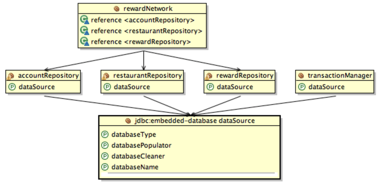

Purpose
In this lab you will gain experience with using Spring’s declarative
transaction management to open a transaction on entry to the application
layer and participate in that transaction during all data access.
You will use the @Transactional annotation to denote what methods need
to be decorated with transactionality.
Learning Outcomes
What you will learn:
-
How to identify where to apply transactionality
-
How to apply transactionality to a method
Specific subjects you will gain experience with:
-
The
@Transactionalannotation -
The
PlatformTransactionManagerinterface -
The
@EnableTransactionManagementbean definition -
Using transactional integration tests
You will be using the 28-transactions project.
Estimated time to complete: 20 minutes.
Objectives
The goal of this lab is to declaratively add transactionality to the rewards application. The lab will be divided into two parts.
In the first part you will add transactions to the application and visually verify that your test case opens a single transaction for the entire use-case.

In the second section you will experiment with some of the settings for transaction management and see what outcomes they produce.
Quick Instructions
If you are already knowledgeable with the lesson concepts, you may consider jumping right to the code, and execute the lab in form of embedded TODO comments. Instructions on how to view them are here.
If you aren’t sure, try the TODO instructions first and refer to the lab instructions by TODO number if you need more help.
Instructions
Marking Transactional Boundaries
Spring offers a number of ways to configure transactions in an application.
In this lab we’re going to use a strategy that leverages annotations to identify where transactionality should be applied and what configuration to use.
Annotating the Application
TODO-01: Add @Transactional annotation
-
Find and open the
RewardNetworkImplclass in therewards.internalpackage. -
Locate the
rewardAccountFor(Dining)method and add an@Transactionalannotation to it. -
Why did we do this?
Adding the annotation will identify this method as a place to apply transactional semantics at runtime.
TODO-02: Add Platform Transaction Manager
-
Navigate to the
SystemTestConfigconfiguration class and add aDataSourceTransactionManagerbean.Remember to set the
dataSourceproperty on this bean.
TODO-03: Enable Annotated Transactions
-
Find and open the
RewardsConfig.javafile in theconfigpackage. -
You need to tell Spring to look for the
@Transactionalannotation you just added to theRewardNetworkImplclass.To do this add a
@EnableTransactionManagementannotation. -
Why did you do this?
For backwards compatibility with older applications, Spring annotations are not enabled automatically, so you have to turn them on.
Verify Transactional Behavior
TODO-04: Verify that your transaction declarations are working correctly by running the RewardNetworkTests class from the src/test/java source folder.
You should see output that looks like below.
The important thing to note is that only a single connection is acquired and a single transaction is created.
DEBUG: o.s.j.d.DataSourceTransactionManager - Creating new transaction with name [rewards.internal.RewardNetworkImpl.rewardAccountFor]: ...
DEBUG: o.s.j.d.DataSourceTransactionManager - Acquired Connection [org.hsqldb.jdbc.JDBCConnection@176b75f7] for JDBC transaction
DEBUG: o.s.j.d.DataSourceTransactionManager - Switching JDBC Connection [org.hsqldb.jdbc.JDBCConnection@176b75f7] to manual commit
DEBUG: o.s.j.d.DataSourceTransactionManager - Initiating transaction commit
DEBUG: o.s.j.d.DataSourceTransactionManager - Committing JDBC transaction on Connection [org.hsqldb.jdbc.JDBCConnection@176b75f7]
DEBUG: o.s.j.d.DataSourceTransactionManager - Releasing JDBC Connection [org.hsqldb.jdbc.JDBCConnection@176b75f7] after transaction
Note
If you look in the
setup()ofRewardNetworkTestsyou will see that we have enabled DEBUG logging for theDataSourceTransactionManager.
If your test completes successfully and you’ve verified that only a single connection and transaction are used, you’ve completed this section.
Configuring Spring’s Declarative Transaction Management
Setting up Spring’s declarative transaction management is pretty easy
if you're just using the default propagation setting (Propagation.REQUIRED).
However, there are cases when you may want to suspend an existing
transaction and force a certain section of code to run within a new
transaction.
In this section, you will adjust the configuration of your reward
network transaction in order to experiment with
Propagation.REQUIRES_NEW.
Modify Propagation Behavior
TODO-05: Review RewardNetworkPropagationTests
-
Find and open
RewardNetworkPropagationTestsfrom therewardspackage in thesrc/test/javasource folder. -
Take a look at the test in the class. As well as a simple verification of data in the database, it also performs manual transaction management.
-
The test opens a transaction at the beginning, (using the
transactionManager.getTransaction(..)call). -
Next, it executes
rewardAccountFor(Dining), then rolls back the transaction, and finally tests to see if data has been correctly inserted into the database.
-
-
Run the test class with JUnit.
- You’ll see that the test has failed because the rollback removed all data from the database, including the data that was created by the
rewardAccountFor(Dining)method.
- You’ll see that the test has failed because the rollback removed all data from the database, including the data that was created by the
TODO-06: Change Propagation
-
Open
RewardNetworkImplagain. -
The
@Transactionalannotation will use the default propagation level ofPropagation.REQUIREDwhich means that it will participate in any transaction that already exists.So when the manually created transaction was rolled back it discards all changes made by the
@Transactionalmethod. -
Override the default propagation behavior with
Propagation.REQUIRES_NEW.
TODO-07: Rerun Test
-
Run the
RewardNetworkPropagationTests.If you have successful test, you have verified that the test’s transaction was suspended and the
rewardAccountFor(Dining)method executed in its own transaction.
What we have just done was purely for demonstration only. In real life, the
rewardAccountFormethod would use the default propagation ofPropagation.REQUIRED, with the test being considered inappropriate.
Developing Transactional Tests
When dealing with persistent data in a test scenario, it can be very expensive to ensure that preconditions are met before executing a test case. In addition to being expensive, it can also be error prone with later tests inadvertently depending on the effects of earlier tests. In this section you’ll learn about some of the support classes Spring provides for helping with these issues.
Use @Transactional to isolate test cases
TODO-08: IMPORTANT Restore Default Propagation
-
Return to
RewardNetworkImpl. -
Undo your propagation changes from the previous section (change the propagation back to
Propagation.REQUIREDinstead ofPropagation.REQUIRES_NEW). This is the appropriate propagation setting for this method.
TODO-09: Transactional Side-Effects
-
Find and open
RewardNetworkSideEffectTestsfrom therewardspackage in thesrc/test/javasource folder. -
Take a look at the two tests in the class.
- Notice that they simply call the
rewardAccountFor(Dining)method, pass in some data, and verify that the data was recorded properly.
- Notice that they simply call the
-
Now run the test class with JUnit.
-
You’ll see that the second test method failed with an error that Annabelle’s savings was 8.0, when 4.0 was expected.
-
Why is this?
The data committed from the first test case has violated the preconditions for the second test case.
-
TODO-10: Automatic Rollback in Transactional Tests
-
Spring has a facility to help avoid this corruption of test data in a
DataSource.-
Simply annotate each test method with
@Transactional- Or put
@Transactionalat the class level so it applies to all tests in the class.
- Or put
-
This wraps each test case in its own transaction and rolls back that transaction when the test case is finished.
-
The effect of this is that data is never committed to the tables and therefore, the database is in its original state for the start of the next test case.
-
-
Annotate the
RewardNetworkSideEffectTestsclass with@Transactional. -
Run the test again and notice that test succeeds.
-
Why did this work?
Because the changes made by the first test were rolled back. Both tests start with the same database state, so the second test now gets the data it expected.
Congratulations, you are done with the lab!